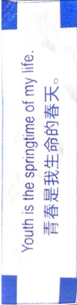
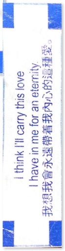
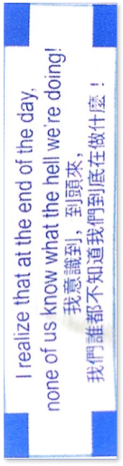
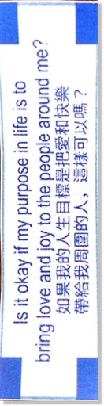
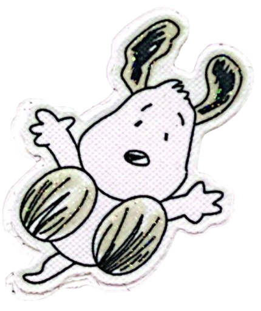
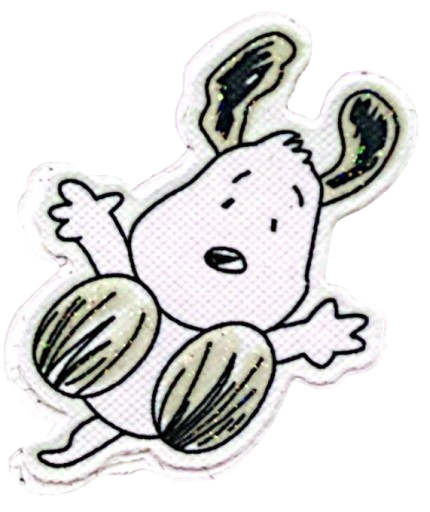

 

lisa hu is a hobbyist photographer based wherever she goes (but currently in orange county). through her photography,
she makes an attempt to capture the fleeting candid moments of unfamiliar nostalgia and the romanticization of the little moments in her life
through experimental techniques and exploration of colors, sprinkled with short form prose here and there. perhaps you’ve seen these places in a dream, or in a far away dimension just on the
horizon of your consciousness... send her thoughts, daydreams, or soliloquies at lisahu662@gmail.com.